| Characters Name | Characters Description | Picture* |
|---|---|---|
| Sauron | Sauron, the eponymous Lord of the Rings, was a fallen Maia, the creator of the One Ring, and the most trusted lieutenant of his master Melkor (Morgoth, the first Dark Lord). After Melkor's defeat in the First Age, Sauron became the second Dark Lord and strove to conquer Arda by creating the Rings of Power. In the Second Age, he was defeated in the War of the Last Alliance by the last line of defense: Elves and Men under kings Gil-galad and Elendil. | 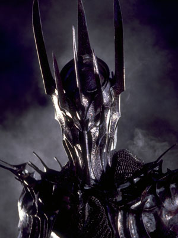 |
| Frodo Baggins | Frodo Baggins, son of Drogo Baggins, was a Hobbit of the Shire during the Third Age. He was, and still is, Tolkien's most renowned character for his leading role in the Quest of the Ring, in which he bore the One Ring to Mount Doom, where it was destroyed. He was a Ring-bearer, best friend to his gardener, Samwise Gamgee, and one of the three Hobbits who sailed from Middle-earth to the Uttermost West at the end of the Third Age. | 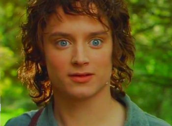 |
| Samwise Gamgee | Samwise Gamgee, known as Sam, was a Hobbit of the Shire. He was Frodo Baggins' gardener and best friend. Sam proved himself to be Frodo's closest and most dependable companion, the most loyal of the Fellowship of the Ring, and also played a critical role in protecting Frodo and destroying the One Ring. | 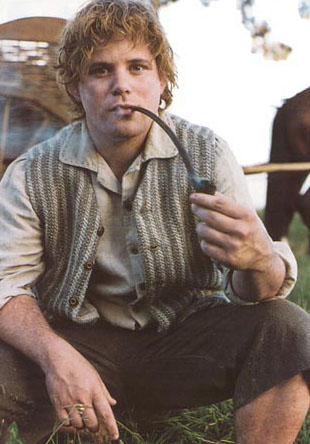 |
| Gandalf the Grey | Gandalf the Grey, later known as Gandalf the White, and originally named Olórin, was an Istar (wizard), sent by the West in the Third Age to combat the threat of Sauron. He joined Thorin and his company to reclaim the Lonely Mountain from Smaug, convoked the Fellowship of the Ring to destroy the One Ring, and led the Free Peoples in the final campaign of the War of the Ring. | |
| Aragorn II Elessar | Aragorn II, the son of Arathorn II and Gilraen, also known as Elessar and Strider, was the 16th Chieftain of the Dúnedain of the North; later crowned King Elessar Telcontar, the 26th King of Arnor and 35th King of Gondor - and first High King of Gondor and Arnor since the short reign of Isildur. He was a great ranger and warrior, and as Isildur's heir he bore the shards of Narsil, reforged and renamed Andúril, in the War of the Ring. | 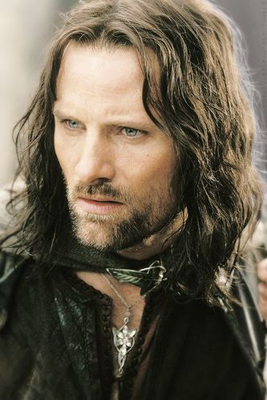 |
| Gollum | Gollum, originally known as Sméagol (or Trahald), was at first a Stoor, one of the three early Hobbit-types. The name Gollum was derived from the sound of his disgusting gurgling, choking cough. His birth can be estimated to have happened in the year TA 2430. His death date is given as March 25, 3019. His life was extended far beyond its natural limits by the effects of possessing the One Ring. At the time of his death, Sméagol was about 589 years old, a remarkable age for a creature that was once a Hobbit, but he had been deformed and twisted in both body and mind by the corruption of the Ring. His chief desire was to possess the Ring that had enslaved him, and he pursued it for many years after Bilbo Baggins found it while walking in the Misty Mountains in the book The Hobbit. In the movies, he was a deuteragonist-turned-secondary antagonist. | 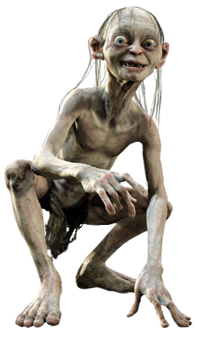 |
| Bilbo Baggins | Bilbo Baggins was a Hobbit of the Shire, the main protagonist of The Hobbit and a secondary character in The Lord of the Rings. Gandalf suggested Bilbo Baggins to be hired by Thorin and Company to be their burglar in the Quest of Erebor, and later fought in the Battle of the Five Armies. Bilbo was also one of the bearers of the One Ring, and the first to voluntarily give it up, although with some difficulty. He wrote many of his adventures in a book he called There and Back Again. Bilbo adopted Frodo Baggins to be his heir after his parents, Drogo Baggins and Primula Brandybuck, drowned in the Brandywine River. | 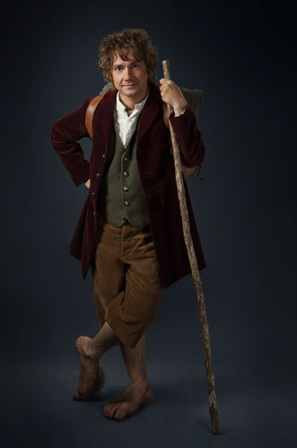 |
| Legolas | Legolas was a Sindarin elf who was part of the Fellowship of the Ring in the Third Age. As he was the son of the Elvenking Thranduil of Mirkwood, Legolas was prince of the Woodland Realm (Mirkwood), a messenger, and a master bowman. With his keen eyesight, sensitive hearing, and excellent bowmanship, Legolas was a valuable resource to the other members of the Fellowship. He was well-known for becoming friends with the dwarf Gimli, despite their long-held differences. | 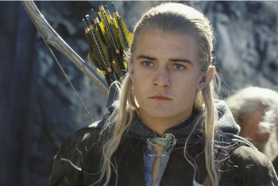 |
| Gimli | Gimli, son of Glóin, was a well-respected dwarf warrior in Middle-earth during the Great Years. He was a member of the Fellowship of the Ring and was the only one of the dwarves to readily fight alongside elves in the war against Sauron at the end of the Third Age. After the defeat of Sauron, he was given lordship of the Glittering Caves at Helm's Deep. | 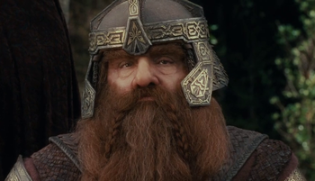 |
| Meriadoc Brandybuck | Meriadoc "Merry" Brandybuck (later known as Meriadoc "Merry" Brandybuck I, due to his grandson's birth) was a Hobbit and one of Frodo's cousins and closest friends. He loved boats and ponies and had a great interest in the maps of Middle-earth. He was also one of the nine companions of the Fellowship of the Ring, and later became the eighth Master of Buckland. | 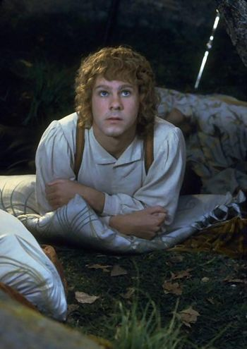 |
| Peregrin Took | Peregrin Took, more commonly known as Pippin, was a Hobbit of the Shire, and one of Frodo Baggins's youngest, but closest friends. He was a member of the Fellowship of the Ring and later became the thirty-second Thain of the Shire. | 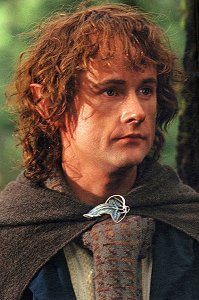 |
| Galadriel | Galadriel was the co-ruler and Lady of Lothlórien alongside her husband, Lord Celeborn - however, neither of them took royal titles, as they only saw themselves as the Guardians of The Golden Wood. She was the only daughter and youngest child of Finarfin, prince of the Ñoldor and of Eärwen, whose cousin was Lúthien. Her elder brothers were Finrod Felagund, Orodreth, Angrod, and Aegnor.[2] Galadriel was a niece of Fëanor, one of the most important elves of the First Age. | 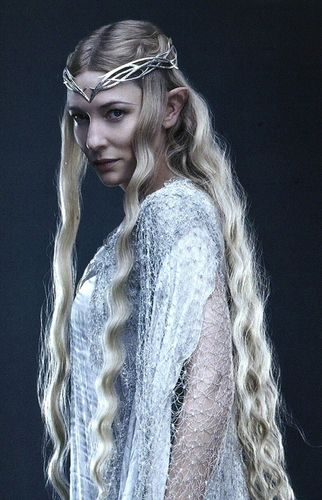 |
| Elrond | Elrond Half-elven, Lord of Rivendell, was one of the mighty Elf-rulers of old who lived in Middle-earth from the First Age to the beginning of the Fourth Age. He was the father of Arwen Undomiel, lover of Aragorn II Elessar. | 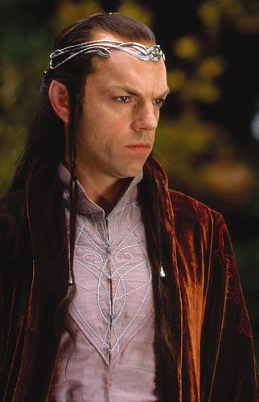 |
| Saruman | Saruman, also known as Saruman the White and Sharkey was an Istar (wizard), who lived in Middle-earth during the Third Age. Originally, he was the chief of the wizards and of the White Council that opposed Sauron. His extensive studies of dark magic, however, eventually led him to desire the One Ring for himself. Thinking he could ally himself with Sauron and then betray him, Saruman allied Isengard with Mordor in the War of the Ring, in which he was defeated. | 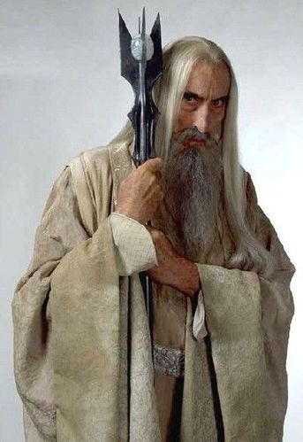 |
| Théoden | Théoden was the seventeenth King of Rohan, and last of the Second Line of the royal House of Eorl. | 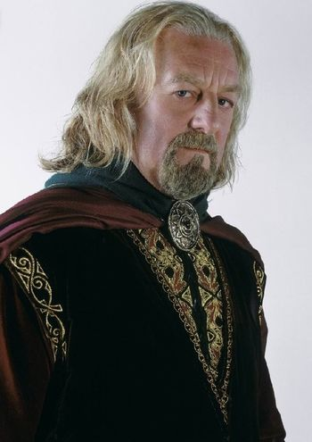 |
| Éowyn | Éowyn was a shieldmaiden of Rohan, daughter of Éomund and Theodwyn, younger sister of Éomer and niece of King Théoden. After the War of the Ring, she married Faramir and had one son with him, Elboron. | 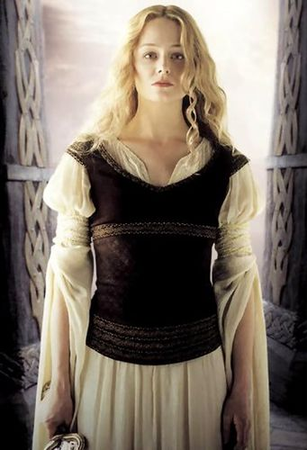 |
*These are pictures of the characters from the movies of The Lord of the Rings.